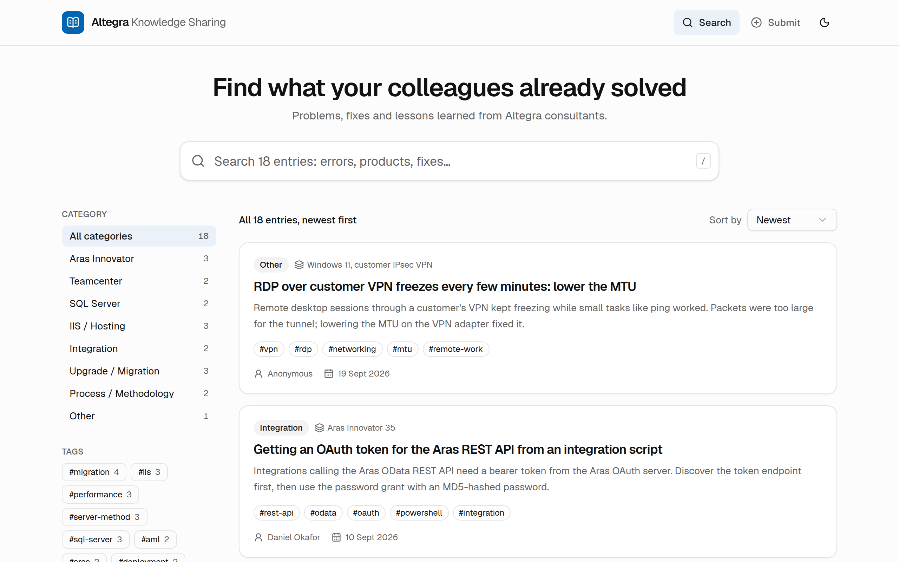
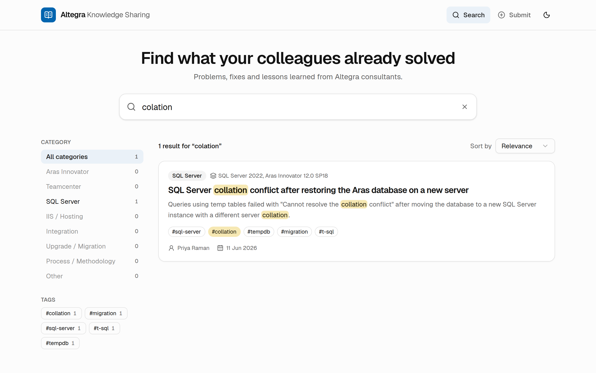
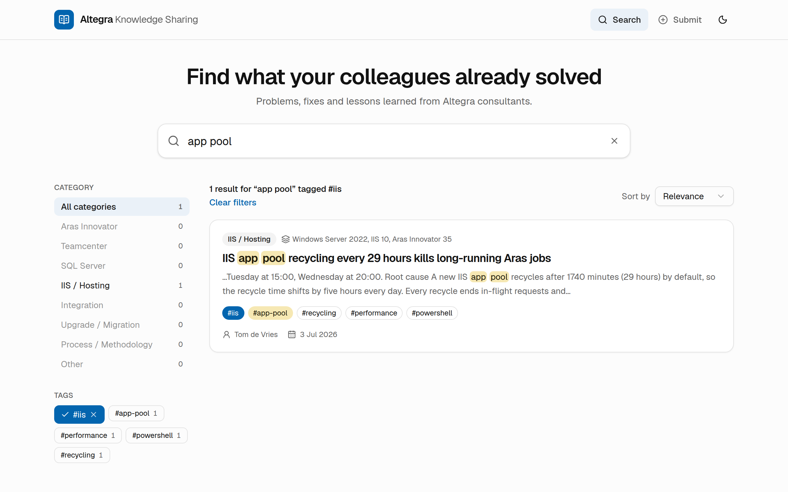
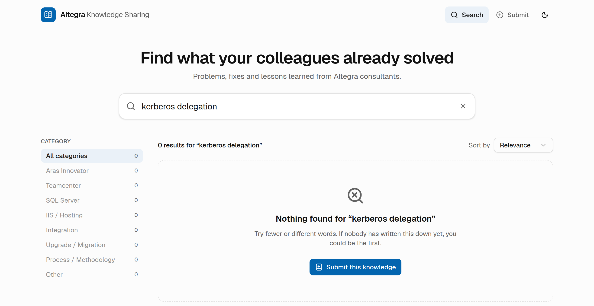
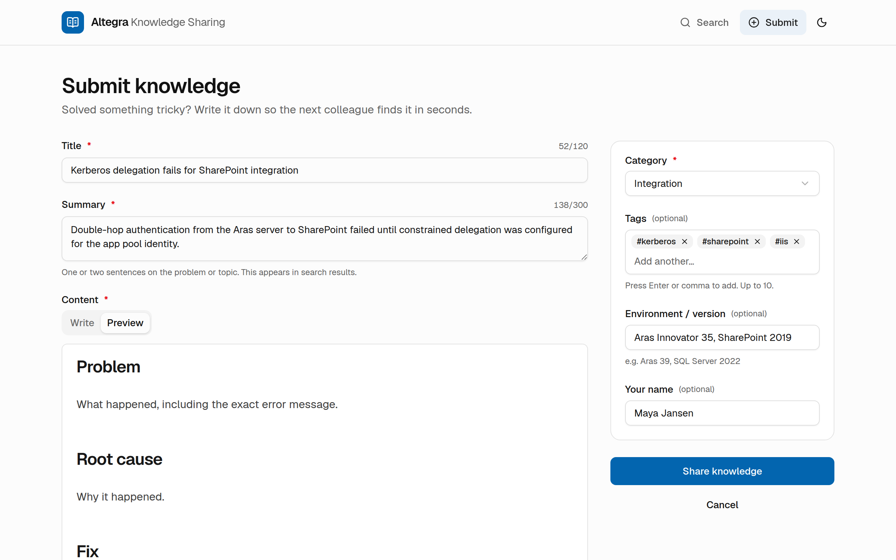
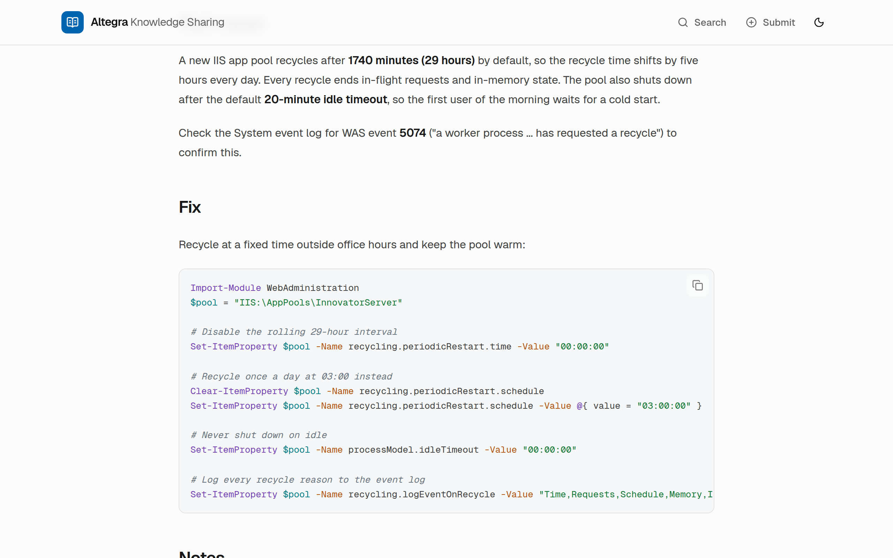
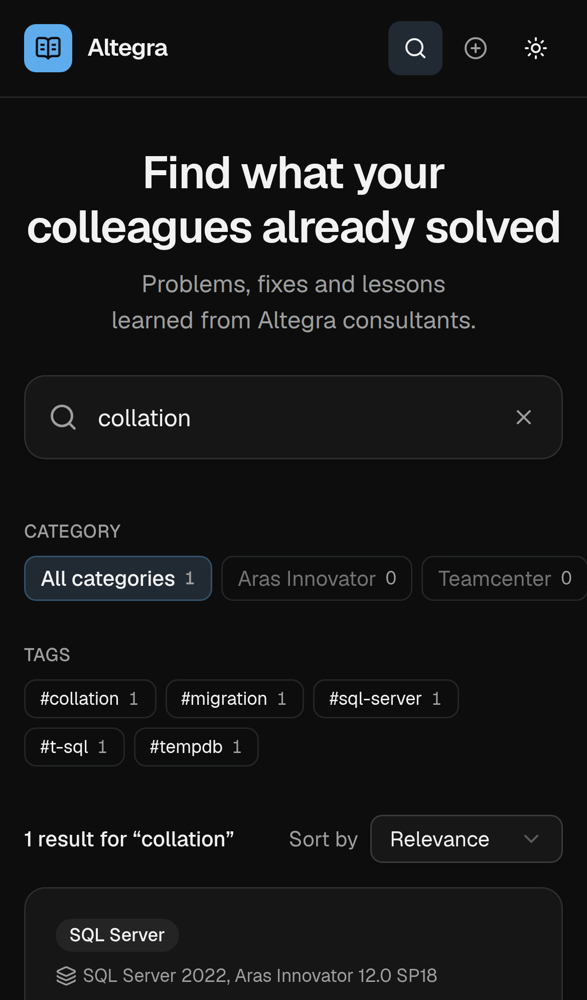

A searchable knowledge base where consultants share the fixes, how-tos and lessons learned from their customer work, and find a colleague’s answer in seconds instead of rediscovering it over an afternoon.

Altegra consultants work on the same platforms at many customers: Aras Innovator, Teamcenter, SQL Server, IIS and the integrations around them. So the same problems keep coming back.
And we connect the two: a search that finds nothing offers Submit this knowledge, with the title already filled in from the search, so every gap in the knowledge base becomes its next entry.
Priya restores a customer database on a new SQL Server and the reports fail with a
collation error. She types colation conflict, with a typo. The first result
shows the exact error message, the root cause and the T-SQL fix, written by a colleague
months ago. She is done in minutes instead of searching all morning.
Tom runs into a Kerberos delegation problem that nobody has documented. The search finds nothing, so he clicks Submit this knowledge. The title is already filled in, the template gives him Problem / Root cause / Fix headings, and the entry is shared a few minutes later. Tomorrow it’s the first result for everyone else.
A project lead pastes …/?q=app pool&tags=iis into a Teams chat. Every
search and filter is part of the link, so the recipient sees exactly the same results.
| Theme promise | What the app does |
|---|---|
| Faster answers | Search as you type across title, summary, content and tags. Typos are tolerated and the matched words are highlighted, so you see why a result matches. Filter by category and tag, sort by relevance or newest. |
| Less admin | No login and no training. A guided template, live Markdown preview, tag autocomplete from existing tags and a remembered author name make sharing a fix take minutes, not a documentation session. |
| Smoother client work | Each entry records the environment and version (e.g. “Aras 39, SQL Server 2022”). Code blocks are syntax-highlighted with a copy button, so a fix can be applied at the customer straight away. |
| Knowledge that stays | Fixes found at one customer help the team at the next. What people learn stays in the team when they change projects. |




Built on MiniSearch, but tuned for how consultants search:
recycl finds “recycling”).lock doesn’t match “look”.We highlight exactly the words the index matched, including tags.

| Area | How it’s done |
|---|---|
| Architecture |
All code talks to one KnowledgeRepository interface. Supabase and a local
JSON file are two implementations, and switching is one setting. Stable UUIDs and ISO
timestamps keep the data portable.
|
| Correctness | TypeScript in strict mode. One Zod schema validates the form in the browser and again on the server. 50 automated tests cover storage, search ranking, server actions and the Supabase client (against a simulated API). |
| Security | The database key is only used on the server. Row Level Security blocks direct browser access. User Markdown is rendered without raw HTML, so it can’t inject scripts. |
| Accessibility |
Labelled inputs, full keyboard use (press / to search), visible focus,
screen-reader announcements for result counts, a skip link, and layouts that work on
phones and projectors.
|
| Stack | Next.js 16 (App Router), React 19, TypeScript, Tailwind CSS 4, shadcn/ui, react-hook-form, Zod 4, MiniSearch, react-markdown, Supabase, Vitest, ESLint, Prettier. |
When a consultant finds a documented fix instead of rediscovering it, the saving is the diagnosis time: often half an hour to several hours for issues like the ones in the app today.
| Illustrative estimate (assumptions, not measured) | |
|---|---|
| Team size | 20 consultants |
| Reused fixes | 1 per consultant per week |
| Time saved each | 45 minutes |
| Result | ≈ 15 hours per week, about two working days, back for customer work |
colation. The SQL Server
collation entry comes first, with collation highlighted.
app pool, then click the tag
#iis. The URL now holds the search; copy it and open it in a new tab.
kerberos delegation. Nothing is found,
so click Submit this knowledge. The title is already filled in.

Altegra Knowledge Sharing turns what one consultant has already solved into a searchable answer for all of them, so the team spends its time on customers instead of on problems it has solved before.